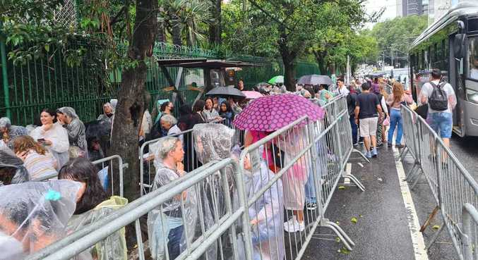
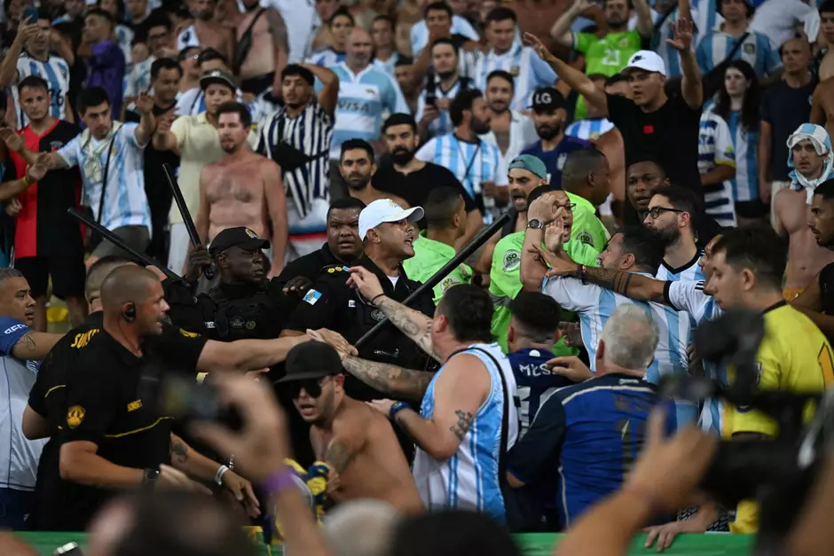
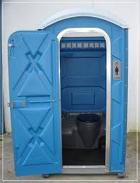

Um dia desses, na frente do allianz park, eu descobri que a Maria Carina ia fazer um show, estava na hora de voltar para casa!

A fila para o show ainda estava vazia, e você pôde escolher o lugar.
Encontrei minha ex no meio do caminho.
Maria Carina teve a honra de te conhecer pessoalmente.

Não conseguiu apreciar o show corretamente, e ainda levou um soco de tabela da briga que estava acontecendo a sua frente.

Você se trancou em um banheiro quimico para que ela não te visse, alguem deixou um presente,e a porta emperrou e agora você está preso até alguem te resgatar.
Ela te cobrou 5 anos de pensão atrasada.